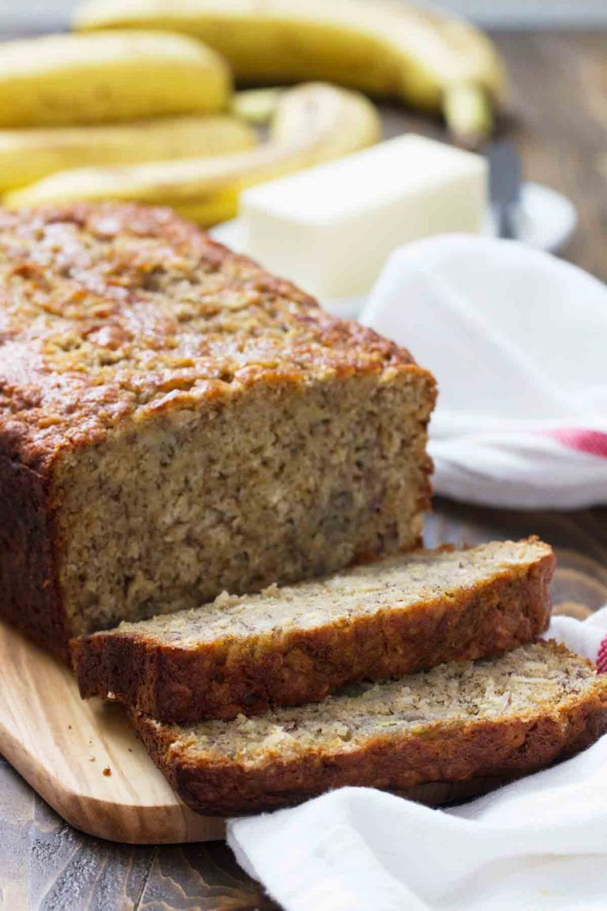

Oatcake

Tips for the perfect banana bread
Make sure those bananas are ripe! I like to wait until they are almost all the way
black on the peel, ensuring that bananas are super sweet.
Ingredients
- 1 cup packed brown sugar
- 1/2 cup vegetable oil
- 1/2 cup 2% milk
- 2 large eggs 2 large eggs
- 2 cups mashed ripe bananas (about 4–5 medium bananas)
- 2 cups all-purpose flour
- 1 cup old fashioned oats
- 1 tablespoon baking powder
- 1/2 teaspoon baking soda
- 1/2 teaspoon salt
- 1/2 teaspoon cinnamon
- 1/4 teaspoon nutmeg
Instructions
- Preheat the oven to 350ºF. Grease a 9×5-inch loaf pan.
You can also line the pan with parchment paper and then spray
that with nonstick cooking spray.
In a large bowl, combine the brown sugar, vegetable oil, milk
and eggs. Mix until combined. Stir in the bananas.
- In another bowl, combine the oats, flour, baking powder, baking soda, salt, cinnamon and nutmeg. Add the dry ingredient to the wet ingredients all at once and stir until combined.
- Pour the batter into the prepared loaf pan. Transfer to the oven and bake until a tester inserted in the center comes out clean, about 60 minutes. You will probably need to cover the top with foil about halfway through the baking time to avoid over-browning the loaf.
- Let the loaf cool for 10 minutes before removing from the pan. Allow to cool completely before cutting.
Nutrition
- Calories: 226
- Sugar: 17 g
- Sodium: 1309 mg
- Fat: 8 g
- Saturated Fat: 1 g
- Unsaturated Fat: 7 g
- Trans Fat: 0 g
- Carbohydrates: 36 g
- Fiber: 2 g
- Protein: 4 g
- Cholesterol: 24 mg